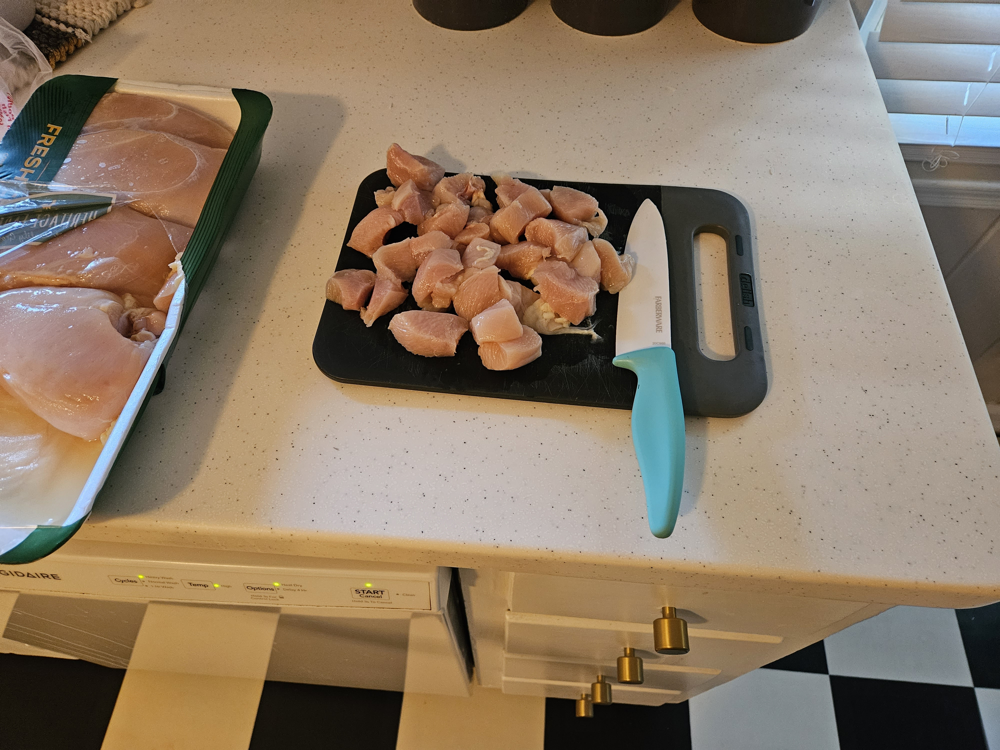

Recipes
Ingredients
- Chicken Breast (How much you use is based on YOUR lifting goals.)
- Olive Oil
- Seasoning (Whatever kind you like...)
- I recommend making rice with this as well.
Get your cutting board out and get ready to cut the chicken. Be mindful of cross contamination.
Cut your chicken up into comfortable bite sized pieces.

Cook your chicken in a pan over medium-high heat. Make sure there is olive oil in the pan and seasoning on the chicken.
Ensure your chicken reaches AT LEAST 165. Make sure you're measuring at the thickest part. Do not make yourself sick.
You can see here that I went over some, but it is WAY better to have chicken that is a little dry than to get violently sick.
Enjoy your chicken